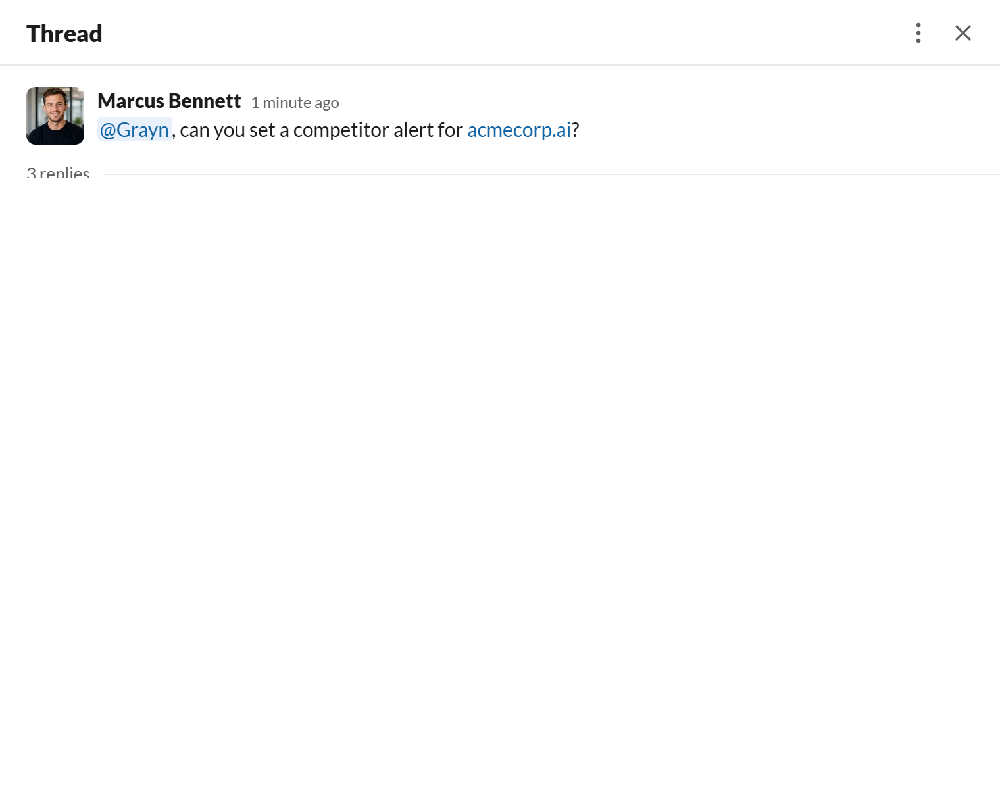
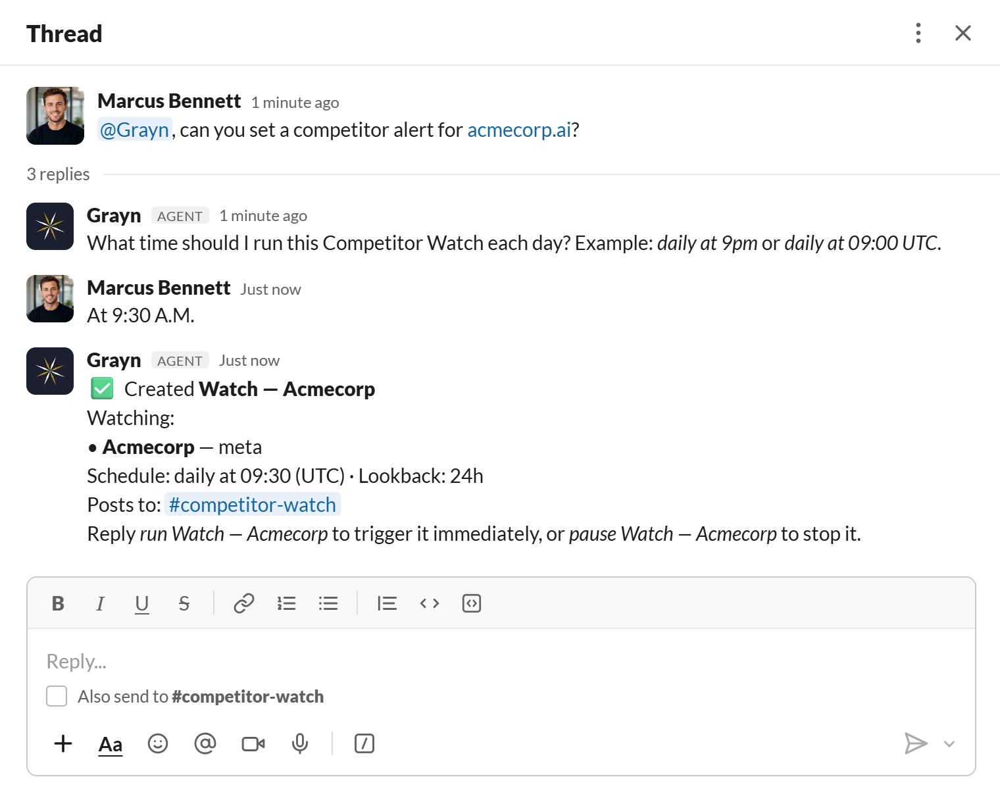
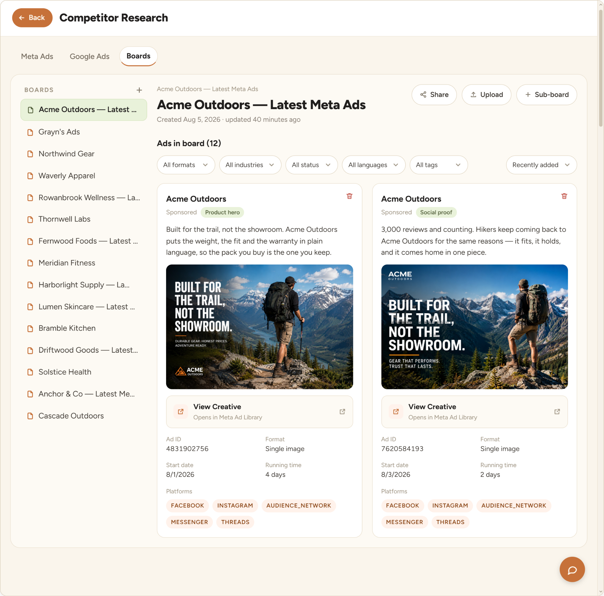
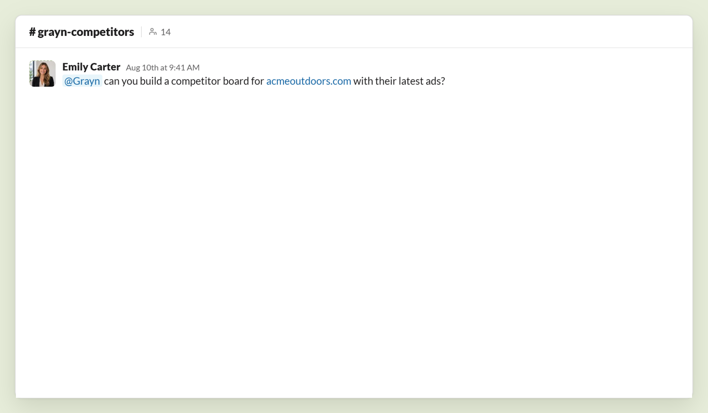
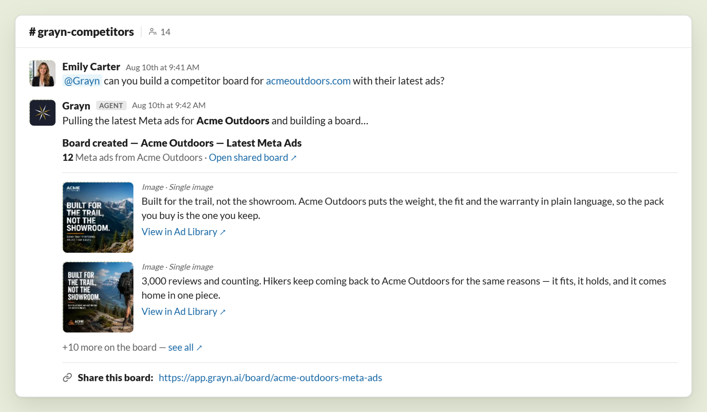

Daily digest
One message every morning with what changed overnight across every competitor you’re tracking.
Grayn watches competitor ad accounts, builds a dashboard from a single link, and posts the highlights where your team already talks. No Ad Library tabs, no stale spreadsheets.


Research lives in a dozen open tabs, a screenshot someone sent in a DM, and a spreadsheet that went stale two briefs ago.
Drop a competitor’s site or ad link in Slack. Grayn builds a live board of their creative, tags the angle and format, and keeps it updated on its own.

“Build a competitor board for Acme Outdoors.” “Show me their latest ads.” Grayn answers in the channel, in seconds, with the creative and a shareable board ready to go.


One message every morning with what changed overnight across every competitor you’re tracking.
The moment a rival launches something new, your team knows, with the creative already attached.
Paste a link. Get a board of creative tagged by angle, hook and format, searchable by anyone on the team.
See which angles and formats nobody in your category has tried yet, so your next brief starts somewhere new.
No vague AI promises. Just the practical stuff you need before putting another tool in the team’s workflow.
Still curious? Talk to us ↗No. Grayn only reads what’s already public: ad libraries, landing pages and public posts. Nothing behind a login.
A screenshot goes stale the day it’s posted. A Grayn board updates itself, and every ad is tagged so you can search by angle or format months later.
No. Competitor Watch works on its own. Connecting your own accounts unlocks side-by-side comparisons, but it’s optional.
About two minutes. Add Grayn to a Slack channel, tell it who to watch, and it starts running.
Free to start, $200 in credits included. No credit card, no setup call.